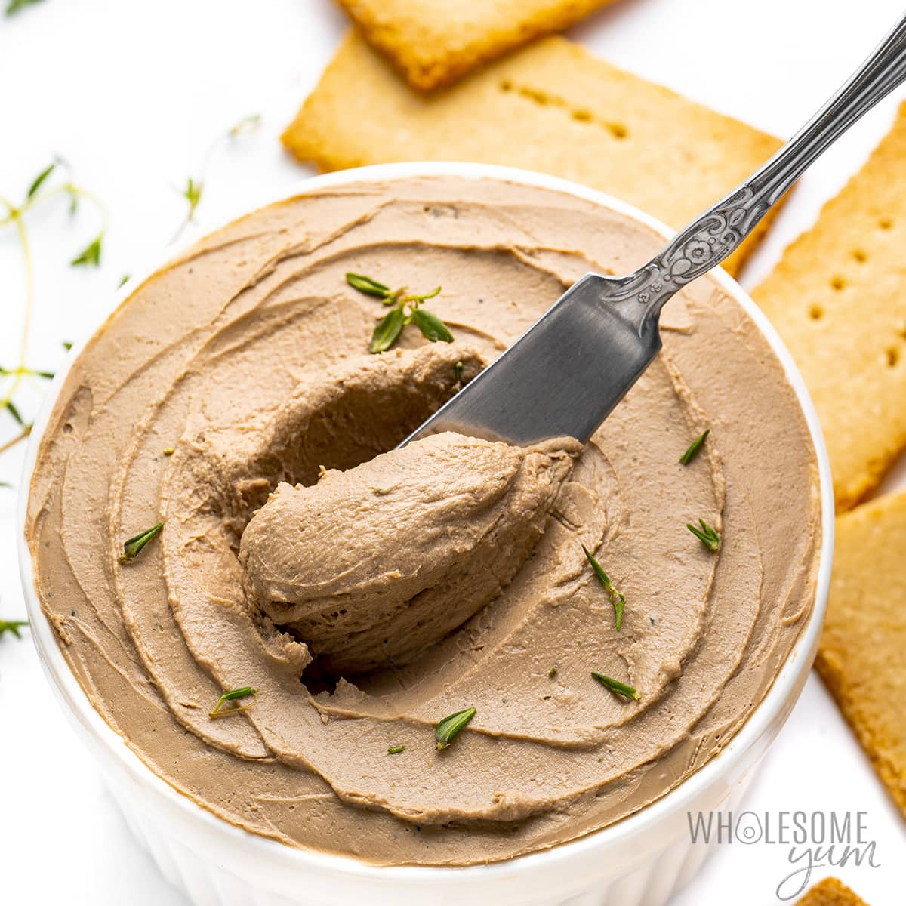

Keto Chicken Liver Paté with Thyme Butter

Description
This gorgeous keto appetizer looks far more advanced than it really is and the ingredients are very affordable. Serve with pickled onions as an amazing appetizer for holiday festivities.
Ingredients
Chicken liver paté
- 1 (110 g) red onion
- 1 garlic clove
- 230 (g) butter
- 2 tbsp brandy or port wine or other type of liquor that you like (optional)
- 1 tbsp tomato paste
- 450 (g) chicken livers
Thyme butter
- 110 (g) butter
- 1 tbsp dried thyme
- 1 tsp ground black pepper
Instructions
Chicken liver paté
- Chop onion and garlic finely and fry soft in a couple of tablespoons of butter on medium high heat. Remove from the pan.
- Increase the heat and add a couple of more tablespoons butter to the same pan. Fry the liver so that it gets fried on all sides. Add liquor. Salt and pepper.
- Lower the heat and reduce the juices. Let cool for a couple of minutes.
- Place the fried onion, garlic and liver in a food processor or a blender and mix into a smooth batter together with the rest of the butter and tomato paste. Spread out in a small baking dish, about 7 x 8 inches (18 x 20 cm).
Thyme butter
- Add four ounces of butter for the topping to a small pan and melt carefully on medium heat. Let the white milk protein sink to the bottom and carefully pour the cleared butter into a small bowl.
- Stir in thyme and pepper. Pour the melted butter over the paté batter and let cool in the refrigerator.
- Serve on seed crackers or thin slices of low-Carb bread with pickled red onions or cucumbers.
Tips
- You can make the paté in advance and keep in the freezer. It will keep for 3-4 days in the refrigerator.
Nutrients
| Carbs |
Protein |
Fat |
Calories |
Fibre |
Sugar |
Sodium |
Calcium |
Sat |
GL |
| (g) |
(g) |
(g) |
(kCal) |
(g) |
(g) |
(mg) |
(mg) |
Fat (g) |
(g) |
| 1.7 |
12.09 |
32.05 |
349.49 |
0.46 |
0.69 |
267.11 |
24.54 |
19.37 |
0.21 |
Back to top of page